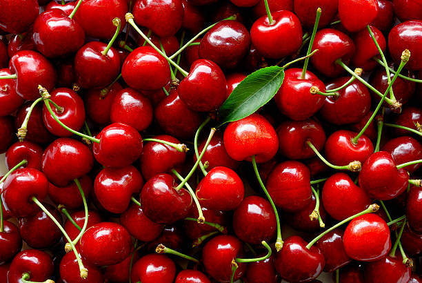

La 'superfruta' que reduce el ácido úrico en sangre y cuida el corazón
En este sentido, un estudio elaborado por científicos de China y Taiwán ha señalado a las cerezas como un alimento que puede contribuir a mejorar los síntomas de esta enfermedad. El trabajo se centró en la revisión de un total de seis estudios en los que se habían investigado las propiedades de estas frutas para reducir el ácido úrico: "Observamos una correlación positiva entre el consumo de zumo de cerezas y un descenso de la concentración de ácido úrico en la sangre", explican en la introducción.
Primera prueba genética POC diagnostica intolerancia a la lactosa cerca del paciente en menos de 90 minutos
En un estudio, los investigadores evaluaron la prueba isotérmica POC de intolerancia a la lactosa de laboratorio en el teléfono utilizando hisopos bucales y muestras de sangre capilar, comparando su rendimiento con el ensayo de secuenciación de Sanger que examinó el SNP -13,910 C/T en muestras de sangre. El límite de detección del ensayo también se determinó en diferentes concentraciones de muestra. Los hallazgos mostraron que la prueba isotérmica de intolerancia a la lactosa STAB VIDA Lda identificó eficazmente el SNP -13910 C/T.
Alzhéimer: el nuevo signo en la orina que anuncia que sufres la enfermedad antes de tengas síntomas
Según describe el estudio, "los niveles de ácido fórmico en orina aumentaron significativamente en todos los grupos con personas diagnosticadas de alzhéimer, en comparación con el grupo de control". Así, concluyen: "Esto sugiere que el ácido fórmico podría actuar como un biomarcador sensible para hallar la enfermedad de Alzhéimer en una etapa temprana".